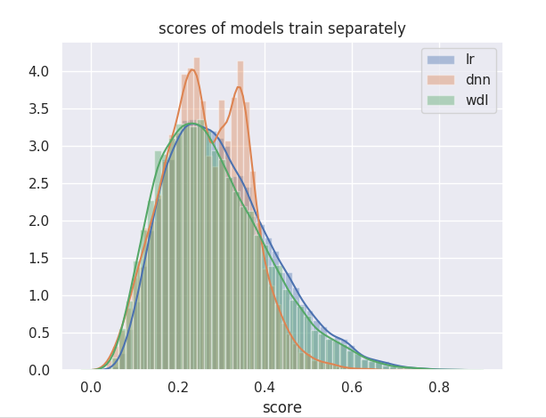
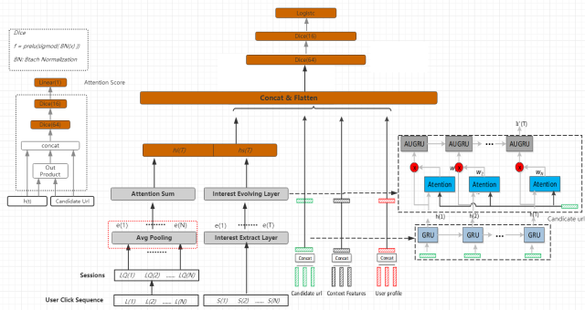

rank 路径
在几经周折之后，我们几个主要场景的主要排序模型都已经从FM切换到NN上来了。 我们目前主要做的工作还是对常见信息流中图文数据进行ctr预估工作，目前阶段我们还只考虑点击。
迫于懒，一些冠冕堂皇的屁话就省略了，需要的请自行脑补。
1. 历史进程
| 模型 | offline(AUC) | Online | 时间 |
|---|---|---|---|
| Simple DNN | 1% | 2% | 201905 |
| PCTR | 4.30% | 3.78% | 201907 |
| DSIN | 6.16% | 10.45% | 201912 |
- 以上对比的baseline都是同时期在线上运行的FM模型，相同的特征集合。
- 因为后期不同模型逐渐放量后，FM模型占比持续降低，所以对于线上表现而言，表现差异会逐步变大。
- Simple NN 之前差不多在一人力的情况下摸索了有10个月。其中线上工程代码相关花费了大量精力。
2. 模型演进
2.1 WDL
上表里之所以没有把这个模型列出来，是因为在这个模型上我们并没有获取到收益……拿出来单讲将算是个铺垫吧（
我们最开始也是想着尽可能复用更多已有的工作。所以，最开始选择尝试的模型结构就是WDL，也是为了尽可能保留之前FM的效果。模型是使用tensorflow里的DNNLinearCombinedClassifier ，三个隐层分别使用了 [128,32,8] 个ReLU Unites 。
客观来讲，之前我们使用FM代替LR的线上收益大约在1%+左右。WDL的wide侧是一个普通的LR，在特征选择方面我们沿用了之前FM的全部特征，这些特征已经包含了大量的业务背景和人工经验，最悲观的情况下，如果deep侧我们什么都不做，完全平移的话，离线auc至少可以持平，线上效果相差应该也符合预期。最开始的时候我们采用的方法也相对简单粗暴，将一些特征离散化之前的原始值直接作为deep侧的输入。
简单粗暴的结果当然是不尽如人意的，AUC要比预期低不少。而且单独测试，deep部分的AUC要明显低于wide部分。经过分析发现，之前我们的大量经历花费在「创造」新的特征上面，忽略了很多已有特征的监控和维护，很多特征已经不再准确（代码我都没改，怎么可能有新Bug呢？），但因为离散化，加上特征本身的稀疏性，这些问题并没有暴露出来。我们重新梳理了特征，并对输入wide侧的特征重新做了normalize。在这之后deep和wide分别单独测试的auc的gap已经在1%以内。
经过上面一些操作，此时WDL模型AUC已经相对于同时期的FM持平，线上实验也基本上无差异，但这并不是我们最终想要的效果。既然针对CTR这个任务预估而言，两个模型带来的结果是一样的，区别仅仅局限在输入上的差异，那么这些差异（deep侧）究竟给我们带来了什么？
$$
P(Y = 1|x) = σ(w^T_{wide}[x, φ(x)] + w^T_{deep}a^{(l_f)}+b)
$$
回过头来看WDL公式本身，logits就是deep和wide两部分logits之和。我们很直观的一个想法就是分别看deep和wide部分对最终logits贡献。
上图是两部分logits的分布，结果也很直观：得分基本由LR部分决定，DNN部分得分对最终结果的影响十分微弱并且集中在0附近。并且随着训练进行，这种情况会越来越明显。最后都只剩下LR了还想着要啥自行车（
经过几轮的简单的参数调整后，我们发现修改模型参数无法对这个情况产生影响。既然DNN在和LR联合训练尚不能取得比较好的效果情况下，那么可否先对DNN进行预训练，在此基础只上训练WDL？在拆分训练之后，DNN部分的logits符合预期。
遗憾的是到这个时候线上效果依旧和base持平，但这时候我们也意识到WDL对比base，下限取决于你的wide部分，而上限则是deep侧决定的。之前都没试过DNN，就想着一下在WDL上取得成绩，可能不如把问题简化，现在DNN部分上拿到收益，再和LR叠加提升收益。
2.2 DNN
大力出奇迹。DNN提升的来源似乎可以用上面几个字概括。在调优DNN方面，首先是使用FM之前全部特征，在经过调整后，AUC和FM的差距大约有0.5%。吸取了之前的经验，我们依旧怀疑引入的特征有问题（这特征有毒，使不得）。
Permutation Test 似乎是一个帮助我们分析特征的一个好方法，简单粗暴。我们随机打乱样本中某一个特征的顺序，重新训练模型。如果这个特征越重要，那么在打乱之后模型效果也就越差。看起来行的通，但我们忽略了这个方法的一个大前提：特征之间需要相互独立，比如一个酒店的房间数量往往隐含着房间的价格、入住客人数量以及房间配置信息，这时候我们通过随机打乱的方式改变其中一个特征很可能构建出真实世界并不存在的样本，基于这种情况去分析特征表现往往会有很大的误导性。虽然shffle特征后对模型AUC带来的5%或者3%的变化是不可比较的，但是0和非0是明确有意义的。最终我们通过这个方法，移除了那些在shuffle后对效果影响不大的特征，避免输入更多的噪声。
离线AUC提高并不意味着线上表现一定提升。当DNN对比FM提升1.3%的情况下，我们线上表现依旧低了2%。这个时候单从离线的角度上已经不那么好发现问题了。粗略总结可能有以下几种情况：
- 低级错误 这个我们也是最开始排查的，常见的有（
我们遇到过的，虽然拿出来讲感觉有点丢人，但是操作起来真的会遇到，或是自己的锅，或是队友的，第一条写在这就是提醒自己。排查问题的思路要清晰，不要总把问题想的太复杂，就以目前的水平能遇到啥别人没遇到过复杂问题呀，遇到了也不一定是自己能搞定的）：服务超时，线上特征抽取与离线不一致，特征穿越。排查后并不存在这些问题。 - 历史模型存在偏置 我们的训练语料采用的的是线上旧的模型排序/展现结果，点击label=1，未点击label=0。T时刻用于训练，T+1时刻用于测试。所以训练语料实际上是基于模型A的结果topK进行训练，线上预测同样是在召回N中取topK。当线上模型B和A的结构相近或者改动较小时候，偏置不会产生很大问题。但当模型差异较大的时候可能会存在类似「过拟合」的情况。
- 样本分布差异
- 新旧样本分布差异。线下训练的时候使用的都是已知的样本集合，而线上环境中会不断有新样本产生，这里我们针对T和T+1时刻数据切分已经包含了这种情况。
- 数据采样带来的差异。一般我们构造训练数据的时候都会依照业务场景做一些采样，这也就意味着离线和线上输出分布存在着认为构成的差异，但这种采样与模型无关。
- 评估指标 AUC计算的时候会将所有样本纳入计算，线下AUC提升为什么不能带来线上效果提升这篇文章讲的很好理解，这里就引用（
抄写）下：线下的AUC、PR、loss、OE等等一堆指标，评估的是 CTR(user*–ad*) 是否够准确，也即每条样本是否拟合准确。而线上真实环境下，关心的是ctr、cpm、cvr等实际收益，所以评估的是 CTR(user–ad*) 是否够准确，也即user1选哪个ad*，最后ctr更高。这导致了线上线下评估目标不对等，自然会存在差异。类似的例子：在LR中，我们添加与item无关，但与user相关，能够引入user bias的特征往往能带来离线AUC的提升，但线上系统并不会被我们的辛苦搬砖的行为所感动。
结合当时遇到的情况，那会我们还没有使用GAUC进行分析，我们将问题的矛头指向历史模型存在偏置，但导致这种现象的本质原因是什么呢？我们通过观察业务指标发现，在新模型上的热门数据展现占比要比base低26%。我们语料在调整上更倾向点击用户，我们的业务场景也是一个满足二八定律的场景。在离线情况下给用户在一定比例热门数据的基础上推荐更具有多样性的数据会促使点击提升。但在另一个全召回的分布下，给用户推荐多样性更好的数据会导致效果变差。同时，冷用户也需要更多热门数据来提升表现。模型更多的memorize了给定的数据集合，没有学到我们想要它具有的泛化性。这些同时指向了item侧特征构建，item侧特征信息表达不够充分。
分析整个特征处理的过程会发现，之前在FM模型中，很多高维稀疏特征都是one-hot编码后直接使用，在DNN中，我们针对这类特征我们在编码后将其转换成了embedding_column从one-hot到embedding随着embedding维度的减小，带来的信息损失也是越来越大的。在dense column的限制下，我们embedding_size << one_hot编码维度的。我们在我们能接受的训练时间和模型大小的前提下，使用了尽可能大的embedding_size。这一改变是明显的，模型大小直接提升了数倍，带来的效果也是明显的，AUC在提升1%左右的情况下，线上效果提升了2%。而我们做的仅仅是暴力的调大了几个特征列的大小，最终业务上的热门数据占比则降低了5%左右。这也让我们理解了浅层网络的宽度更重要。单从模型参数维度考虑，假设某个ID类特征共有N个取值，第一层embedding大小位e，后面接一个隐层，维度为d，则模型参数为N*e+e*d，对于常见的高维系数特征而言，N>>d，可见修改e的值会带来模型参数数量级的影响。
2.3 PCTR
PCTR这部分可能存在一些不那么政治正确，不当讲的事情
上半年的时候公司商业化团队在公司相关类似的团队以合作的方式推广他们的PCTR–ctr预估模型及其整套的计算框架，最初合作的方式是他们那边出几个人，使用我们的数据，用他们的框架，承接我们的线上流量（野蛮人过来抢业务，挑战你，说的无私一点就是大家都想问了把公司的业务做的更好，也不是说部门墙，我们不开放，但强行赛马，真的更好么？当然这些干我屁事啊？中间又经历了啥我也不知道。主要的一点是这个框架也是他们某总监从前东家带过来的，简单沟通之后发现也是属于吃老本，不具有维护能力，同时也不想继续开发，这就贼他么尴尬了，我们也很难接啊也就理解他们的难处了，自己没办法继续搞了，只能拿着这个东西去抢业务了。）。最终在领导们的努力下，变成了他们帮我们搭建这套框架，并交付给我们自己维护，具体效果我们自己负责，留下了一堆安装文档，及一套对我们闭源的框架。（题外话，据说这个框架是百度的，两位从相关团队离职的人，分别单人了两家公司相关业务的总监。)
嗯，不管怎么说，这套框架放到我们的业务上也确实取得了一定提升（然而都是大公司几年前的东西了）。
具体框架层面：内部实现了参数服务器，支持稀疏和稠密参数，并行、异步无锁更新。训练模块采用插件化的方式实现，但仅仅包含了LR、MF、DNN，还有一个CVM（生成show、click等连续值）插件。
结构：分布式多进程，都是平等的worker，互为server。每个worker内多线程。每个worker都会负责：1)读取部分数据、2)shuffle、3)balance、4)训练、5)存储并更新部分参数
通信方式：获取及更新参数：异步RPC，基于zmq实现 统计耗时、内存等系统指标，进程间同步：MPI
明人不说暗话，这些都是文档上抄来的。接下来就是模型部分了，一图胜千言。
训练流程：
- 使用一天或一个pass的所有instance先进左侧模型，只更新dnn中的参数。
- 所有instance进右侧模型，更新dnn中的参数和LR、MF中的参数，以及增减特征。
双模型是整个模型比较有特点的地方，但仔细想下也比较好理解：embedding端到端训练完成后，在增量更新时候锁定。使得embedding后面的网络更容易训练，同时模型也更加稳定，可以认为后面的DNN是对特征embeeding进行fine-tuning。
除了update策略上有些创新外，模型还强调了对输入的数据要进行充分的shuffle，这个可以理解，我们数据往往基于日志构建，同一个用户同一次请求的数据往往集中在一起，充分shuffle后有助于提升模型收敛速度，加速模型训练。
CVM统计的是特征的show_click信息，如果配置了LR、MF、CVM，则每个feature，会有1维的LR的weight，8维的MFweight，1维SHOW的统计值，1维click的统计值。在backward中更新lr、fm参数时同时统计show、clk。这个模块相当于变相进行了一次特征筛选工作。另外，show、click计数部分也引入了时效性的概念，show、click会随时间衰减。具体来讲，就是在每天所有数据训练完后，分别对各个特征的show、click乘一衰减系数。
一些问题：
两侧的模型有何区别？
左侧模型是用于训练线上所用的dnn网络（线上只使用左侧的dnn网络）。对于它来说，输入是LR、MF等数值。右侧模型是用于训练供左侧用的LR、MF等数值，相当于在做embedding。对于它来说，输入是one-hot编码的特征。
为什么先走左侧后走右侧？
右侧模型的训练其实是独立的，不管先走左侧还是先走右侧，它的训练结果都一样。左侧模型的训练会受到顺序的影响：若先走左侧，则它用的输入是右侧模型用T-1时刻样本训练出来的embedding；若先走右侧，则它用的输入是右侧模型用T时刻样本训练出来的embedding。线上场景中，是使用T-1时刻的输入，预测T时刻的样本。离线训练时，其输入应与线上场景保持一样，才能取得较好的训练效果。所以，应先走左侧。反证：假设先走右侧模型，则LR、MF特征已经被更新，学到了新instance的信息，再训练左侧就有偷看答案的嫌疑；且左侧训练时不符合当时线上的情景，训练完后，再次还原线上过程让它使用T-1时刻的输入，预测T时刻的样本，不一定能取得很好的效果。
这个模型我们只是准备好我们自己的语料，和相关的同事一起配合支持了我们的线上业务，就模型优化层面我们并没有更多深入的理解，在cvm做特征筛选部分我们觉得是个相对可以借鉴的点，但是受限于我们使用的tensorflow，在技术层面很难实现框架里的cvm插件，这条后续路线也就到此结束了。
除此之外，这个框架通过双模型的方式让我我对embedding有了新的理解，其双模型主要想要实现的是对embedding进行冻结。embedding在推荐结果中是针对历史信息的一种表征，需要大量语料来学习。在一段时间内（pctr的假定是1天）embedding的语义信息是不会发生较大变化，比如出国游一词在假期来临的时候其关注度会被提高，但归结原因并不是出国游 一词本身语义发生变化，能带来更高点击，而是假期到了，出游是假期的一种选择，我们把embedding冻结起来，模型能够更加快速的捕捉到其它特征权重的变化，从而进一步提升模型的泛化性。另一个例子，提到隐形的翅膀 这个词，其背后含义很可能代表着张韶涵的一首歌曲，但作为一首十余年前的歌曲，突然有一天被腾格尔的翻唱刷屏洗脑，热度迅速提高。这时候隐形的翅膀其背后的语义对比过去一段时间已经发生了巨大的变化，这时候其代表的含义可能已经变成了洗脑歌曲，腾格尔翻唱。这时候我们再去重新训练embedding就会有收益，所以也就有了更新embedding的过程。
2.4 DSIN
有样学样，照着别人的演进路径来自己实践。
2.4.1 DIEN
当有了一个好的开头之后，后续就顺利了很多。
首先是参照阿里的DIEN模型，在模型中加入用户历史点击序列，通过Attention机制刻画当前item和用户历史点击之间的相关性，通过GRU建模用户兴趣演变。
在最开始也试着将DIEN里面的Auxiliary Loss引入到我们的模型中，但是离线实验了具体的效 果，并没有太大的提升，AUC提升不到0.1%。分析原因，可能是因为引入辅助loss的目的是指导 用户兴趣的学习(在输入侧通过构建正负样本对)，但是在我们的样本特征里面，已经有了用户 embedding相关的中间特征，这部分特征描述了用户不感兴趣的item。 模型使用了3天的语料rebase，设置epoch=6，离线AUC相比FM提升1.15%，线上ctr大概提升了 3.5%。
一个问题：一般包括RNN在内的大多数时间序列模型都有一个前提，就是各输入之间是等时间间距的，但是在我们的NN1里面，点击序列之间并不是等时间间距，这样做没有影响吗？ 其实这个我们有做过考虑，我们尝试了将时间间隔作为bias加入到我们的每一个点击item，各种方 案都有所尝试，但是却没什么效果，估计也跟这种特殊的行为序列内在数据模式有关。
2.4.2 引入自适应激活函数
激活函数方面文中提到了Dice激活函数，在这之前，对比ReLU和PReLU，没有太大差异。
$$
PReLU(s)=p(s) \cdot (1-p(s)) \cdot \alpha s, p(s)=I(s>0)
$$
$$
Dice(s)=p(s) \cdot (1-p(s)) \cdot \alpha s, p(s)=\frac{1}{1+exp(\frac{s-E(s)}{\sqrt{Var(s)+\epsilon}})}
$$
可以看到，Dice是对PRelu做了平滑，使得拐点不再是固定的0，而是依赖于数据的分布。将Dice运用到我们的模型，AUC大概能提升0.4%，通过模型参数调节和引入Dice激活函数，线上指标大概能提升1.5%。
2.4.3 引入历史60天点击session
在使用GRU对用户点击序列建模的过程中，发现历史长度最大取10和最大取100，离线的AUC变化大概在0.2%左右，但是耗时却增加了不少。考虑到模型上线的问题，最后只选取了最近的10次点击。考虑在我们的实际业务中，用户在一段时间可能只对某些主题感兴趣，我们可以将用户的历史点击划分为多个session，然后对每个session去提取相关的topic embedding，这样可以将序列的长度取得更长，同时也不会增加多少耗时。在综合session个数和session内的点击次数后，选取了用户最近的10次点击session，session长度最大取20，这样就可以覆盖200次点击行为。模型的结构如图所示，sessionembedding使用简单的avg pooling方式，离线AUC大概提升了0.275%
图中Attention sum计算方式如下：
$$
V_{u}=\sum_{i=0}^{N} w_iv_i=\sum_{i=0}^{N}g(V_i,V_a)V_i
$$
其中g()表示Attention计算函数，V_i 表示历史点击，V_a表示目标item。
2.4.4 使用multi-head self attention表征session
前面的模型非常简单粗暴的使用Avg Pooling来表征session，无法刻画session内行为间的相关性，同时session内可能也有噪声，有些点击是偏离topic。为了解决这个问题，使用Multi-head self-attention对每个session建模，同时为了刻画不同session间的顺序，使用Bias Encoding，离线测试AUC大概能提升0.22%。模型设计参照DSIN实现，模型结构如下：
2.4.5 引入BiLSTM刻画session演变

由于性能问题，我们只能对10次点击的历史使用GRU序列建模，在经过session embedding后，我们可以直接对session的序列建模，捕捉不同session间的演变，而session包含了用户最近200次的点击信息，这样就丰富了我们的序列信息。通过引入60天点击session、multi-head self attention、以及的迭代，离线AUC提升了0.551%，线上指标提升2%。
3. 语料调整
语料调整的过程最开始还是以FM模型为基础实现的，后续切换到NN模型后基本都保留了下来，除了少许改动。
这部分内容纯属一个工程经验以及业务理解部分，比较蛋疼的地方是涉及到语料调整的实验，只能看线上AB后验，调整后的模型在离线预测上因为训练和测试已经不再在同一分布上了，所以离线验证auc会有一些抖动。
语料精简，顾名思义，在这里是丢掉不需要的语料。这个场景是否可以有有效曝光的打点？如果有，那么果断用有效曝光，效果不会让你失望，在我们尝试后有些渠道就把全量展现切换到有效曝光后就可以有10%左右的提升！经验可以概括为：若果展现pv和有效曝光的差距越大，那么切换到有效曝光后，提升也就约大。这也很好理解，我们引擎分发出去的数据因为各种展现样式，屏幕尺寸，广告遮挡的原因导致用户没有看到数据的情况下，我们将样本标记为负样本—-这并不代表用户真实行为。这样的数据越多，导致我们和真实的数据分布差异也就越大。
换言之，我们所有渠道都只使用用户有效曝光数据不就可以了？但实际上我们的业务场景里并不能做到所有场景都有有效曝光，比如我们在手机浏览器的信息流服务，手机浏览器团队就明确拒绝我们这样的打点需求—-耗电。所以我们后续做的也很明确，理解业务场景通过策略调整语料，让语料更加接近有效曝光的分布。
好了，如果理解了上面的那句话，这里似乎就没有什么好讲的了。
- 使用5分钟内有点击用户的全部样本进行增量训练，同比全采样，点击提升4%。
- 使用3天数据init模型，5分钟增量更新模型，ctr提升1%-2.4%，点击提升0.5%-2%
7天init后，不再对模型rebase，一直增量更新。ftrl更新，如果长期不初始化，稀疏性越来越差，到一定时间后模型效果开始变差。- 5分钟最后一次点击前语料，丢弃疑似无效曝光，ctr提升1.2-2.6%，点击提升0.4%-2.1%。
- 5分钟最后一次点击前语料 ＋ 最近72小时语料，ctr提升3.4%，点击提升2.8%。
保留请求间隔大于8s数据，ctr和导出均下跌，说明该方式误差较大。- 修正展现位置偏差，最大位置ctr/不同位置的比值加权点击 × k 或者只取topk的数据（指标持平）
过滤ctr>s的用户数据，点击降低1.2%对展现量过高的头部的item对应的样本进行采样，点击降低1.4%只取ctr>s的item对应的数据参与训练，点击降低3%